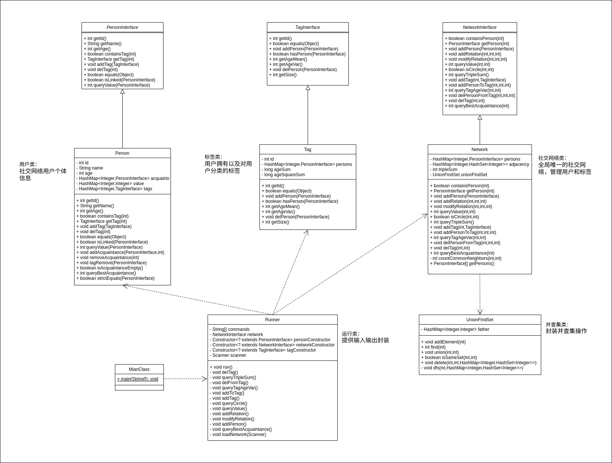
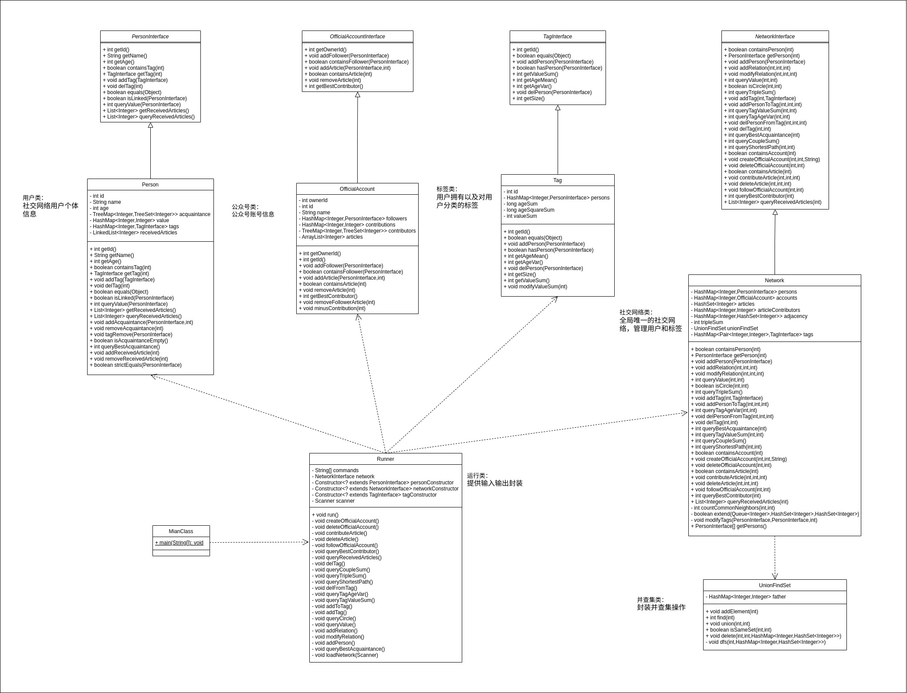
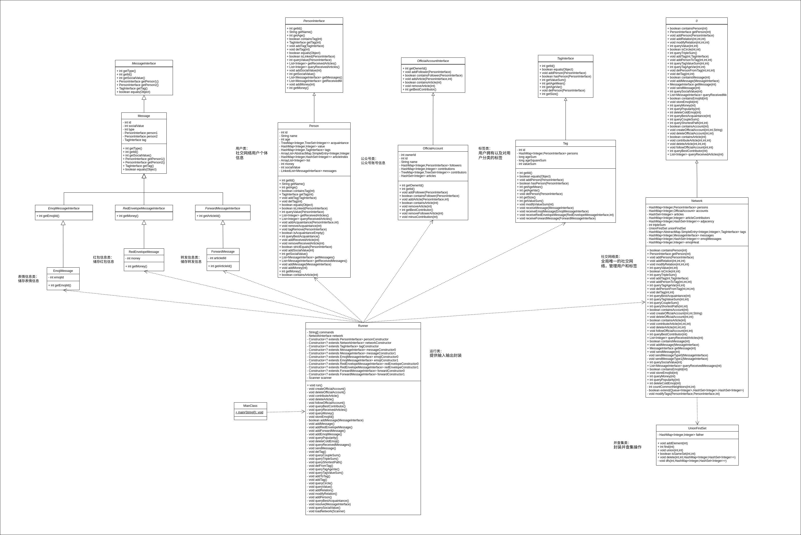

OO Unit3
测试过程
对不同测试方式的理解
- 单元测试：针对代码最小可测试单元（如类方法）的测试，验证独立逻辑正确性，通常由开发者在编码时编写，一般为静态的白盒测试。
- 功能测试：验证系统功能是否符合需求，模拟用户操作流程，关注端到端业务逻辑是否正确。
- 集成测试：测试多个模块或服务协同工作时的交互，检查接口兼容性、数据传递和整体流程是否正常，具有更强的综合性。
- 压力测试：通过模拟高并发、大数据量等极端条件，评估系统性能瓶颈、资源消耗和稳定性。
- 回归测试：代码修改后重新运行已有测试用例，确保新改动未破坏原有功能，防止已经修复好的错误重新出现。OO的bug修复过程采用了回归测试的思想
数据构造的策略
本单元的程序构造了一个图模型，虽然相比于前两个单元，构造数据不需要考虑递归下降、时序先后等问题，但是如果单纯随机构造数据，会使得构建出的图过于稀疏，或者运行的结果仅是各种异常抛出，达不到全面测试的效果。此处分析我在Junit单元测试（白盒测试）和自动化测试（黑盒测试）的数据构造策略
Junit单元测试
Junit单元测试集中于测试某个方法的正确性，并不需要很大的数据量（比如上百个person），只要覆盖了各种情况就能有很好的效果。
本人测试的数据规模一般为15个person，然后用循环的方法，逐步将边数从零图增加到完全图状态，并在此过程中不断调用被测方法，判断调用的正确性。如此一来就可以覆盖零图到稀疏图到完全图的所有状态，而且测试代码比较简洁
自动化测试
自动化测试的数据生成倒是简单，但是想生成有强度的数据相当困难。这里采用了指令分类+维护社交网络状态的方法提高数据强度。
指令分类
观察指导书中的指令，我们可以发现其大致可以分为三类：添加、删除、查询。
要使得我们生成的数据不会对着一个零图删删查查，我们需要首先生成一定量的添加指令，即初始化一个图。其中，还要考虑各种添加操作的比例。例如add_relation指令要比add_person多得多，按照完全图计算的话，n(ar)应该是$\frac{n(ap)*[n(ap)-1]}{2}$，否则就会导致图节点很多但是边很少。此外，为了测试零图/稀疏图的情况，也可以在初始化图之前先生成各种指令进行测试。
在初始化图之后，可以考虑使用随机数生成剩下的指令。此时也需要考虑各个指令的比例，以提高数据质量
维护社交网络状态
本人在数据生成器中设置了一些数据结构，储存person、tag、account、article等的id以及他们之间的相互关系，并在数据生成的过程中动态维护这些数据结构。在生成一条指令时，可以参考数据结构中的内容，控制该指令是让程序正常执行还是抛出异常，再结合随机数，就可以调整被测程序正常执行/抛出异常的概率，从而覆盖各种测试情况。
大模型辅助编程
本单元中我在第一次作业、第二次作业和实验课使用了大模型辅助编程，并与自己独立编程做对比。下面从大模型编程效果和引导大模型的方法两方面进行分析。
大模型效果
鉴于JML规格的严谨性，我尝试将官方包中的接口和异常类全部上传给DeepSeek，然后调整提示词让大模型完成代码编写。总体来说大模型可以完成本单元的任务，（比如第一次、第二次作业我的代码基本可以用大模型生成），但是也有不少缺点：
- 大模型可能受限于上下文长度，往往“偷懒”，有一部分的类方法不生成出来，仅提示“按照类似方法可以完成这部分代码”。此时需要再次给提示词说明“请编写代码完成xxx方法”。
- 大模型对复杂逻辑的处理不稳定。第一次作业中，涉及一些方法的实现需要调用一些辅助方法，但是DeekSeek只做了一个声明，而没有实现具体功能，最后还是我自己补上了。。。
- 大模型不一定可以保证代码性能最优化。第一次作业中，大模型的代码并没有使用并查集实现isCircle()，这在性能上显然有比较大损失。不过有时大模型也能给出不错的实现，比如在我增加“尽可能提升代码性能”的提示后，大模型采用了动态维护的方法实现查询三元环操作，这个实现是我一开始没想到的
- 大模型写代码可能导致自己对代码不熟悉。由于大模型多半不能一步到位，程序员还得自己优化代码，此时由于代码并非自己完成，就可能在优化过程中遗漏一些地方。比如我就忘了在删人时动态维护tag_value_sum（
补充几点大模型优点：
- 辅助理解JML。在第三次作业中，惊现长达75行的巨无霸JML，即便硬着头皮读还是读不懂。此时让大模型先根据JML写一遍代码或者用自然语言描述要求，都对我们理解JML有很大帮助
- 细节处理到位。大模型代码的异常处理部分准确度很高，没有出现传错id的错误
大模型引导方法
- 提供完整信息。上传完整文件可以保证大模型生成的代码不会遗漏重要内容。本人在第一次用大模型生成时没有上传异常类，结果生成的代码中，每个异常处理都没有输入id
- 提供关键词提示。在输入中加入“JML专家”、“代码性能”、“仿照已有的JML规格”等等关键词，有助于引导模型生成高质量代码
- 同一上下文环境多次引导。在同一个上下文中请求大模型完成类似的代码生成任务，可以提高大模型的效果
架构设计
UML类图
hw9

hw10

hw11

图模型构建与维护
连通性查询：isCircle的实现我采用了并查集，并通过路径压缩提升效率。个人认为如果使用了路径压缩后再实现按秩合并，会出现压缩时需要动态维护秩的问题，造成代码复杂度大幅增加，为了这点微不足道的优化而大幅增加复杂度没有比较，于是没有使用按秩合并。删除关系时，则以其中一个person为起点，通过bfs部分重建并查集
动态维护：这是一个多数查询方法都采用了的策略，即每次图有相关的变化时都修改一次维护对象，查询时直接返回对象值。这样便把复杂度平摊到了每一次的修改操作中，提升了代码的整体性能
脏位设置：第三次作业中，每个人接受到的文章中可能出现重复id，这就使得简单的基于哈希的存储和查询方法不能奏效了。本人使用ArrayList存储<文章, 脏位>键值对，HashMap存储文章id对应的所有索引，在删除文章时，只将对应脏位设为0。如此便保证文章的加入和删除操作均变为了O(1)。坏处在于由于文章id没有被实际删除，占用的空间不会被释放，所以在数据超级大时可能MLE，但是强测也才1万条数据，用ArrayList存1万个entry应该不过分吧……
性能问题
很遗憾，第二次作业中因为LinkedList吃了亏，挂了一个点。我在deleteArticle的实现中，先循环遍历tag中的所有person，然后对person执行removeReceivedArticle。由于receivedArticle使用LinkedList储存，一来二去整个方法的复杂度成了O(n2)，喜提不通过。
针对这个问题，我直接用LinkedHashSet替换了LinkedList，同时保证了添加和删除复杂度为O(1)。在第三次作业中，由于文章id可重复，我改用ArrayList+HashMap+脏位来保证性能。
虽然JML规定了代码的实现规格，但是JML本身的描述未必是实现的最优解，往往还可能是性能最差的那一批。此时我们就必须将实现与规格分离，在保证JML的各项要求得到满足的前提下，尽可能地利用各种数据结构和算法，提升代码的性能
Junit测试
Junit设计
在本单元，使用Junit测试代码其实就是检查代码是否遵循了JML的各个要求。JML主要由requires、assignable、ensures等部分构成。其中requires是测试数据需要满足的约束，而assignable和ensures则是代码要满足的约束。测试时要根据assignable和ensures涉及的内容，检查代码是否正确满足ensures要求，是否改变assignable以外的内容。
Junit效果
只要在Junit测试中将几条内容逐个检查清楚，基本可以保证代码与JML的一致性，从这个角度看，Junit可以说是指哪打哪。但是对于代码中一些多模块协作的情况，Junit不容易检测出其中的逻辑错误，这时候也要结合一些其他测试方法来检测bug（比如黑盒测试）
学习体会
JML规格化设计，与前两个单元大不相同。个人感觉这个单元对我的提升主要在思维上，也就是通过JML了解了规格化设计这么一个工具，并深刻学习到了其中的思想。当然，还学习了各种各样的图论知识并增强了看一长串说明的能力……
此外，看根据JML实现代码也十分考验人的细心程度，毕竟一不留神就可能写错异常处理，全盘皆输。我在这个单元出的bug也是相当多相当冤了（再次证明了充分大量测试的重要性）。OO还剩一个单元，希望能安然度过吧